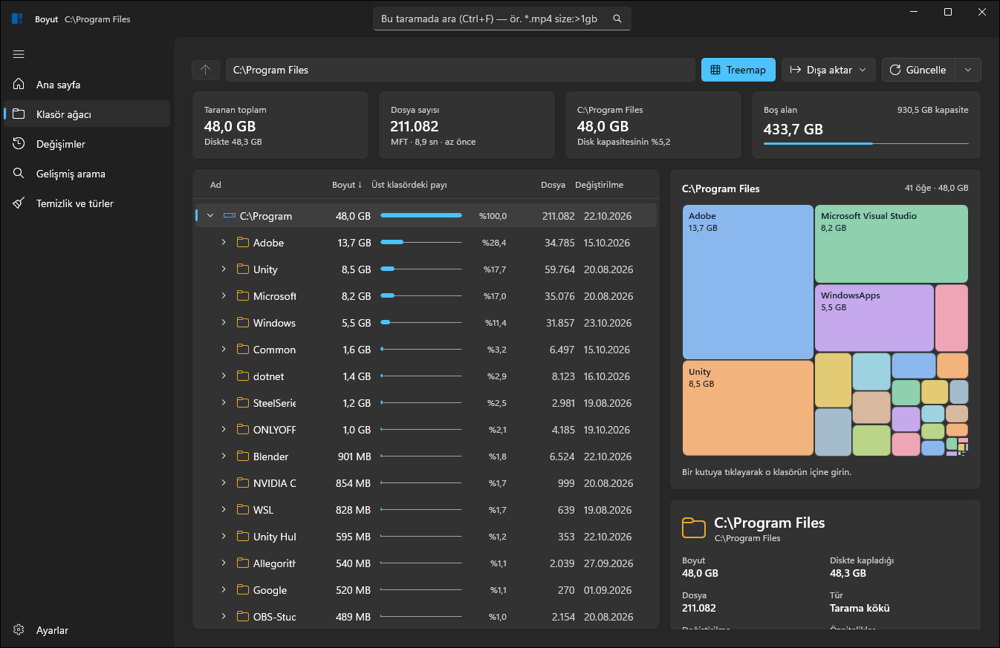

Diskini neyin doldurduğunu bir bakışta gör.
Boyut, Windows için bir klasör ve disk analiz aracı. NTFS sürücülerde dosya tablosunu (MFT) doğrudan okur. Tam bir C: sürücüsünü birkaç saniyede tarar, kaplanan alanı treemap üzerinde gösterir ve neyi güvenle silebileceğinizi söyler.
Sürüm 0.1.0, Windows 10 2004 ve üstü, x64. Kurulum gerekmez: zip'i açıp Boyut.exe'yi çalıştırın. Ücretsiz ve açık kaynak.
Bu gerçek bir tarama değil, örnek bir sürücü. Bir klasöre tıklayınca içine girersiniz, yukarıdaki yoldan geri dönersiniz. Uygulamadaki karolar da aynı yerleşim algoritmasıyla (squarified treemap) ve aynı renklerle çizilir.
Uygulamanın içi
Windows 11'in Fluent tasarımıyla yazılmış yerel bir uygulama: Mica arka plan, açık ve koyu tema, klavye kısayolları. Arayüz normal kullanıcı yetkisiyle çalışır, böylece Gezgin'den sürükle bırak çalışmaya devam eder. Hızlı tarama için gereken yönetici iznini ayrı bir yardımcı süreç ister.

Neden bu kadar hızlı
Klasik araçlar her klasörü tek tek listeler. Boyut NTFS'in dosya tablosunu ham olarak okur, yani bütün diski birkaç büyük ardışık okumayla alır. Sonrasında her şey bellekteki sıkı dizilerin üzerinde çalışır.
- Ham MFT okuma
FindFirstFileile klasör klasör dolaşmak 5 ile 20 kat daha yavaş.FSCTL_ENUM_USN_DATAise dosya boyutu vermiyor. Boyut $MFT kayıtlarını kendisi ayrıştırır: fixup, runlist, hard link, alternatif veri akışları ve WOF sıkıştırması dahil.- Nesne değil dizi
- Her dosya için bir nesne yerine paralel diziler (
int[] parent,long[] size) ve tek bir ad havuzu kullanılır. Bellek kullanımı birkaç kat azalır, arama da tek bir sıkı döngüye dönüşür. - Genişlik öncelikli sıra
- Her düğüm üst klasöründen sonra gelir. Bu sayede klasör toplamları sondan başa tek bir geçişte hesaplanır.
- Değişiklik günlüğüyle güncelleme
- Her tarama NTFS değişiklik günlüğünün (USN Journal) o anki konumunu kaydeder. Güncelle (F5) yalnızca o andan beri değişen klasörleri yeniden okur ve bunun için yönetici izni gerekmez.
- Hard link bir kez sayılır
- WinSxS gibi klasörlerde aynı dosyanın birden çok adı vardır. Hepsi ağaçta görünür ama boyut yalnızca bir kez eklenir, bu yüzden Gezgin'deki şişkin rakamları görmezsiniz.
Dosyalarınızı sorguyla bulun
Ad, boyut, tür, tarih, konum ve öznitelik aynı satırda birleşir. Aşağıdaki konsol yukarıdaki örnek sürücüde gerçekten arama yapar. Bir örneğe tıklayın ya da kendi sorgunuzu yazın.
*.mp4;*.mkvJoker karakter.;"veya" anlamına gelir.**\node_modulesHer derinlikte eşleşir.size:10mb..500mbAralık,>,<ya daempty.type:video,görselDosya türü.kind:diryalnızca klasörleri getirir.modified:<2024-06Tarih.age:>90dvemodified:bugünde çalışır.attr:hidden,cloudGizli, sistem, bağlantı, bulut, hard link, sıkıştırılmış.in:"*\Steam\*"Belli bir klasörün altında arar.-*.log -in:WindowsBaşa eklenen-sonucu hariç tutar.boyut: uzantı: tür:Anahtarların Türkçe karşılıkları da çalışır.IMG_[0-9]???.*Karakter sınıfları. Tırnak içi düz metin olarak aranır.
Taramadan sonra
Hangi klasörün büyük olduğunu bilmek işin yarısı. Geri kalanı neyin güvenle silinebileceğini, neyin büyümeye devam ettiğini ve aynı dosyanın kaç kopyası olduğunu bilmek.
Temizlik önerileri
node_modules, derleme çıktıları, tarayıcı ve paket önbellekleri, Windows Update artıkları. Her öneri "güvenli", "gözden geçir" ya da "dokunma" olarak işaretlenir ve nedeni yazılır.
Kopya bulucu
Önce boyuta, sonra dosyaların içeriğine bakar. OneDrive gibi bulut yer tutucuları asla açılmaz, yani tarama sırasında hiçbir şey kendiliğinden indirilmez.
Değişimler
Her tarama geçmişe kaydedilir. Aynı sürücünün iki taramasını karşılaştırıp neyin büyüdüğünü, eklendiğini ve silindiğini ağaç olarak görürsünüz. Büyümenin çoğunun hangi klasörden geldiği de yazar.
Komut satırında:boyut diff C:\
Arka plan izleme
Görev Zamanlayıcı seçtiğiniz sürücüleri günde ya da saatte bir tarar. Boş alan eşiğin altına düştüğünde veya sürücü hızla büyüdüğünde bildirim gelir. Bildirime tıklayınca Değişimler sayfası açılır.
Güvenli silme
Silinen her şey önce Geri Dönüşüm Kutusu'na gider ve indeksten anında çıkarılır. Yeniden taramanız gerekmez, yanlışlıkla sildiğinizi de geri alabilirsiniz.
Gezgin'de sağ tık
Windows 11'in yeni bağlam menüsünün üst düzeyine "Boyut ile analiz et" eklenir. İmza ya da yönetici izni gerekmez, Geliştirici Modu açık olmalıdır.
Kurulum:tools\register-modern-context-menu.ps1
Dışa aktarma
Tüm ağacı ya da seçili klasörü CSV olarak alabilirsiniz. Taramayı Brotli ile sıkıştırılmış bir .boyut dosyası olarak kaydedip başka bir bilgisayarda açabilirsiniz.
Komut satırı
Aynı çekirdek boyut.exe olarak da gelir. Tarama, arama, temizlik analizi, kopya bulma, fark ve güncelleme betiklerden çalıştırılabilir.
Kurulum
Yükleyici yok. .NET ve Windows App SDK paketin içinde, ayrıca bir şey kurmanız gerekmez.
İndirin
Son sürüm sayfasından
Boyut-win-x64.zipdosyasını alın. Komut satırı aracı aynı sayfadaboyut-cli-win-x64.zipolarak durur.Açın
Zip'i bir klasöre çıkarın ve
Boyut.exe'yi çalıştırın. SmartScreen uyarısı çıkarsa önce "Ek bilgi"ye, ardından "Yine de çalıştır"a tıklayın; uygulama henüz imzalı değil.Tarayın
Bir sürücü seçin. NTFS'te hızlı tarama için bir kez yönetici izni istenir. İzin vermezseniz Boyut klasör taramasıyla devam eder.
# Kaynaktan derleme (.NET 10 SDK) git clone https://github.com/MihrimatriX/boyut cd boyut ./build.ps1 -Run # Komut satırı aracı boyut scan C:\ --depth 2 boyut search C:\ "*.mp4;*.mkv size:>1gb" boyut cleanup D:\Projeler boyut dupes D:\Fotoğraflar --min-size 5mb boyut diff C:\ boyut refresh C:\